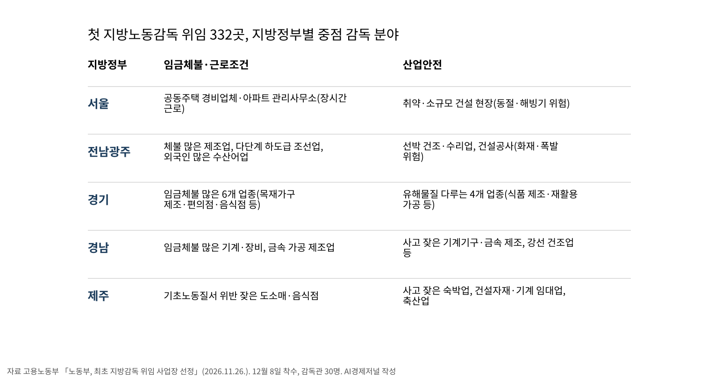
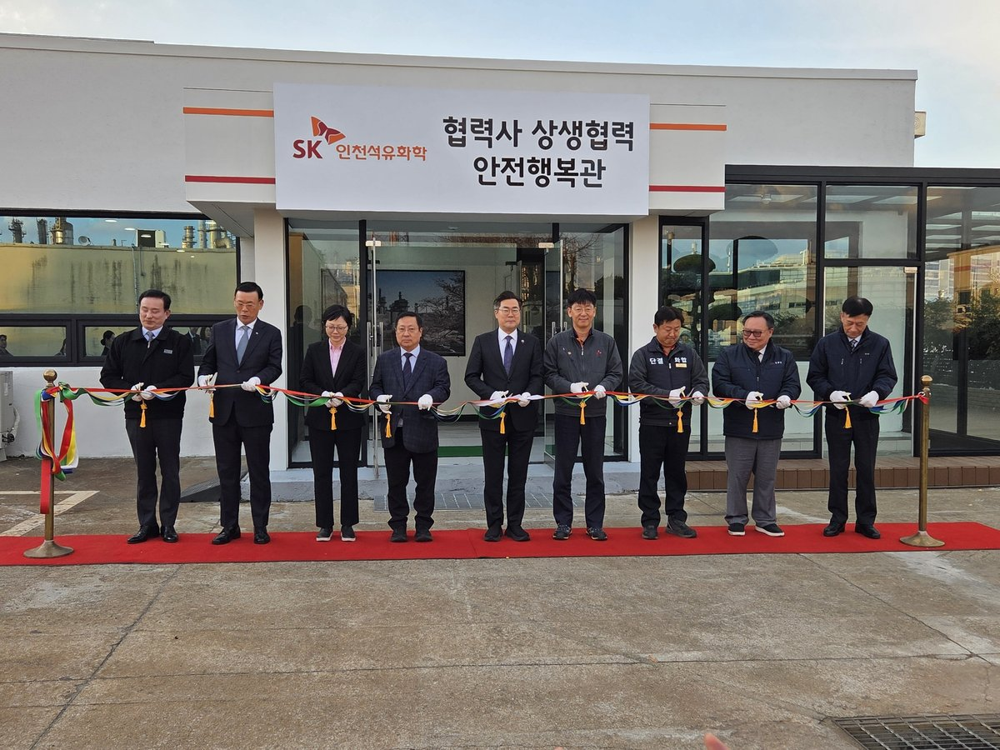

지방노동감독 첫 위임 332곳, 인천은 제외
서울·전남광주·경기·경남·제주 감독관 30명, 12월 8일 착수
내년 4월부터 지방노동감독관 500여 명
인천시 노동감독 사무 신설·시 정원 늘리는 조례안, 12월 15일 본회의
AI경제저널=김갑봉 기자 | 고용노동부가 상시 노동자 30명 미만 사업장 332곳의 감독 권한을 지방정부 5곳에 넘긴다. 서울, 전남광주, 경기, 경남, 제주다. 인천은 첫 위임에 들어가지 않았다.
고용노동부는 27일 제2회 전국노동감독협의회를 서면으로 열어 위임을 정했다. 노동감독관 직무집행법이 시행되는 12월 8일, 5개 지방정부 감독관 30명이 감독에 들어간다.
30명은 다섯 곳을 합친 착수 인원이다. 고용노동부는 내년 4월부터 나머지 지방정부를 포함해 지방노동감독관 500여 명이 활동할 예정이라고 밝혔다.
감독관 30명, 내년 4월까지 332곳
전국노동감독협의회는 장관이 사업장 감독 권한 일부를 시·도지사에게 넘기기 위한 법정 협의 기구다. 고용노동부 장관이 의장이고, 법무부·행정안전부 차관 등과 16개 시·도 부단체장이 참여한다.
고용노동부는 착수 인원 30명이 내년 4월 말까지 시범으로 감독할 물량을 고려해 332곳을 골랐다고 밝혔다. 감독관 한 사람당 평균 11곳꼴이다(AI경제저널 계산).
고용노동부는 지역별 산업 특성과 임금체불·산업재해 발생 현황을 따져 대상을 골랐다고 밝혔다. 지역노동감독협의회가 지역별 중점 감독 분야와 위임 대상을 미리 협의했다.
고용노동부는 4월 법 제정 뒤 8개월 동안 단계적으로 준비했다고 밝혔다. 올해 4월부터 11월까지 30명 미만 취약 사업장을 중앙과 지방이 함께 점검하는 「지역 기초노동질서 점검」을 했다.
지역마다 다른 감독 업종
서울은 장시간 근로를 막으려 공동주택 경비업체와 아파트 관리사무소를 본다. 겨울과 해빙기 지반 약화 같은 위험 요인을 살피려 소규모 건설 현장도 본다.
전남광주는 체불이 많은 제조업, 다단계 하도급 조선업, 외국인을 많이 고용한 수산어업을 본다. 화재·폭발 위험이 큰 선박 건조·수리업과 건설공사도 대상이다.
경기는 임금체불이 많은 목재가구 제조업·편의점·음식점업 등 6개 업종을 본다. 식품 제조업, 플라스틱·금속·고무 가공업, 재활용 가공업 등 유해물질을 다루는 4개 업종도 본다.
경남은 임금체불이 많은 기계·장비·금속 가공 제조업과 사고가 잦은 강선 건조업 등을 본다. 제주는 기초노동질서 위반이 잦은 도소매·음식점과, 사고가 잦은 숙박업·건설자재·기계 임대업·축산업을 본다.

김도형 고용노동부 근로감독정책단장은 12월 8일이 중앙정부만 맡던 노동감독에 지방정부가 함께 나서는 첫날이라고 말했다. 영세 사업주에게는 예방과 노무관리를 돕는 감독이 되게 하겠다고 했다.
인천시의회에 간 노동감독 조례안

인천시는 11월 20일 행정기구 설치 조례와 공무원 정원 조례의 일부개정조례안을 시의회에 냈다. 제안 이유는 노동감독관 직무집행법 시행에 따른 노동감독 사무 신설과 노동감독관 증원 등이다.
행정기구 조례안은 경제국 분장 사무에 「노동감독에 관한 사항」을 새로 넣는다. 같은 조례안은 국제협력국의 이름을 평화국제국으로 바꾸는 내용도 담았다.
정원 조례안은 시 공무원 정원을 7702명에서 7732명으로 30명 늘린다. 일반직 4급이 2명, 5급 이하가 28명 늘어난다. 시행일은 2027년 1월 29일이다.
인천시의회 의안정보에 두 조례안은 12월 1일 소관 상임위원회 심사, 12월 15일 본회의 처리 일정으로 올라 있다. 의안번호는 10-237과 10-238이다.
감독 빈도와 임금 연구
리타 알메이다(Rita Almeida)와 페드루 카르네이루(Pedro Carneiro)는 브라질 자료로 노동감독 빈도와 노동시장의 관계를 분석했다. 논문은 2012년 『미국경제학회지: 응용경제학』에 나왔다.
연구진은 감독이 잦은 지역에서 노동자가 법정 복리후생을 받는 대신 더 낮은 임금으로 그 비용을 치렀다고 밝혔다. 다만 임금 분포 아래쪽에서는 임금 경직성 때문에 이런 하향 조정이 일어나지 않았다.
연구진은 그 결과 임금이 낮은 공식 부문 일자리가 일부 비공식 노동자에게 매력 있는 일자리가 됐다고 분석했다. 이들이 공식 부문으로 옮기기를 원하게 됐다는 결과다.
12월 8일 5개 지방정부가 감독에 들어간다. 이어 12월 15일 인천시의회 본회의, 내년 1월 29일 인천시 정원 조례 시행 예정일, 내년 4월 지방노동감독관 확대 일정이 남았다.
참고문헌
- Almeida, R., Carneiro, P., 「Enforcement of Labor Regulation and Informality」, 『American Economic Journal: Applied Economics』 4권 3호, American Economic Association, 2012, 64~89쪽, https://doi.org/10.1257/app.4.3.64
- "노동부, 최초 지방감독 위임 사업장 선정", 고용노동부 근로감독정책단, 2026.11.26., https://www.korea.kr/briefing/pressReleaseView.do?newsId=156790975
- "인천광역시 행정기구 설치 조례 일부개정조례안"(의안번호 10-237), 인천광역시장, 2026.11.20., https://record.icouncil.go.kr/bills/index.do (의안번호로 검색)
- "인천광역시 공무원 정원 조례 일부개정조례안"(의안번호 10-238), 인천광역시장, 2026.11.20., https://record.icouncil.go.kr/bills/index.do (의안번호로 검색)
- 「노동감독관 직무집행법」(법률 제21534호, 2026.4.7. 제정, 2026.12.8. 시행), 국가법령정보센터, https://www.law.go.kr/법령/노동감독관직무집행법
- "인천시, SK인천석유화학 협력사 상생협력 안전행복관 개관, 원청·협력사 상생협력 거점 마련", 인천광역시 경제정책과, 2026.11.25., https://www.incheon.go.kr/IC010205/view?repSeq=DOM_0000000016091993
[사진 출처]
- [사진 1] 인천광역시 보도자료 「인천시, SK인천석유화학 협력사 상생협력 안전행복관 개관, 원청·협력사 상생협력 거점 마련」(2026.11.25.) 붙임 사진, 공공누리 출처표시, https://www.incheon.go.kr/IC010205/view?repSeq=DOM_0000000016091993
※ 이 기사는 AI 프로그램 클로드를 활용해 작성했습니다.
관련기사
저작권자 © AI경제저널 무단전재 및 재배포, AI학습 및 활용 금지